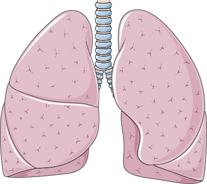
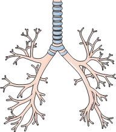

|  |
Les poumons sont un organe de l'appareil respiratoire. Ils permettent la respiration : à inspirer et à expirer l'air. Lors de l'inspiration, le diaphragme (muscle qui sépare la région thoracique de la région abdominale) se contracte, pour permettre à l'air d'entrer dans les poumons. Lors de cette inspiration, le dioxygène (O₂) va traverser la paroi des alvéoles et passer dans le sang et alimenter les organes et tissus. Lors de l'expiration, le diaphragme se détend et le dioxyde de carbone (CO₂) transporté depuis les organes et tissus sera rejeté. |
|  |
Les bronches sont un conduit de l'appareil respiratoire qui permet l'entrée de l'O₂ et la sortie du CO₂ dans/depuis les poumons. |